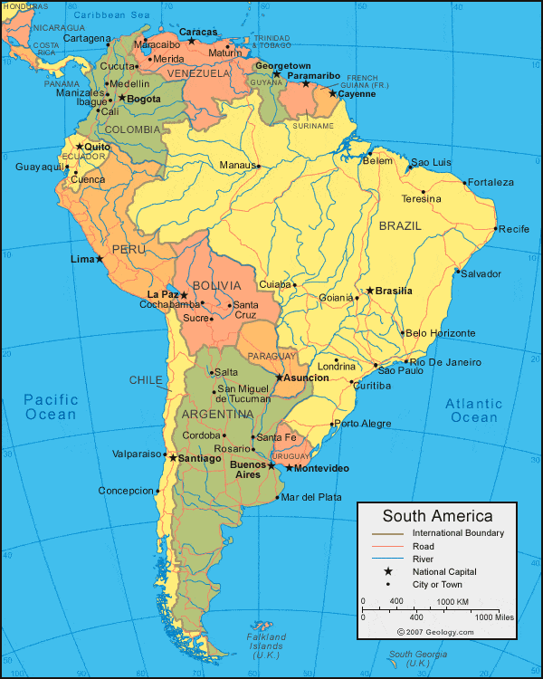

South America is a continent located in the Western Hemisphere, mostly in the Southern Hemisphere, with a relatively small portion in the Northern Hemisphere. It is also considered as a subcontinent of the Americas, which is the model used in Spanish-speaking nations and most of South America.
South America has an area of 17,840,000 square kilometers (6,890,000 sq mi). Its population as of 2005 has been estimated at more than 371,090,000. South America ranks fourth in area (after Asia, Africa, and North America) and fifth in population (after Asia, Africa, Europe, and North America). The most populous countries are Brazil, Colombia, Argentina, Venezuela and Peru.
